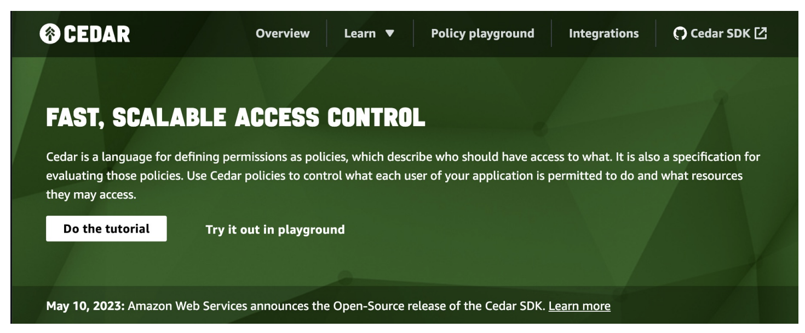
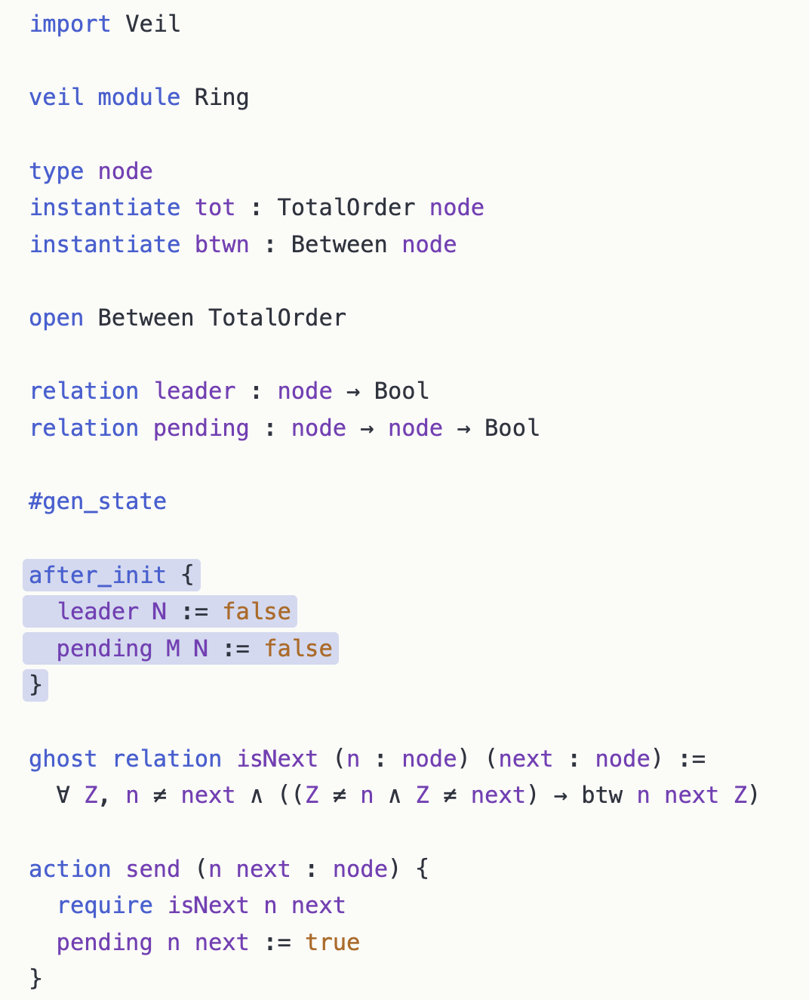

Lean: Verified Software at AWS
What is Lean?
A programming language and a proof assistant
Same language for definitions and proofs. No translation layer.
Lean is implemented in Lean. Very extensible.
Lean is scalable.
Small trusted kernel. Proofs can be exported and independently checked.
Programming and Theorem Proving in Lean
"You have written my favorite computer game" — Kevin Buzzard
def reverse : List α → List α
| [] => []
| x :: xs => reverse xs ++ [x]
theorem reverse_append (xs ys : List α)
: reverse (xs ++ ys) = reverse ys ++ reverse xs := by
induction xs with
| nil => simp [reverse]
| cons x xs ih => simp [reverse, ih]
#eval reverse [1, 2, 3]
The "game board": you see goals and hypotheses, then apply moves (tactics).
Each tactic transforms the goal until nothing remains. The kernel checks the final proof term.
The Kernel Catches Mistakes
example : reverse [1, 2, 3] = [1, 2, 3] := by simp [reverse]
You don't need to trust me, or my automation. You only need to trust the small kernel.
Incorrect proofs are rejected.
Multiple Independent Kernels
arena.lean-lang.org hosts independent kernel implementations.
-
The reference kernel — C++.
-
nanoda— Rust. -
lean4lean— Lean. -
nanobruijn— Rust. -
Many others.
Anyone can build a kernel and submit it.
Disagreement between independent kernels exposes bugs that neither would catch alone.
The State of Lean
275,000+ unique installations: VS Code (155K) + Open VSX (122K).
Ecosystem: 10,000+ GitHub repositories depending on Lean.
Every IMO medal-level AI system with formal proofs used Lean.
Industry: AWS, Google, Microsoft, Mistral, Nethermind, Galois, others.
"Lean has become the de facto choice for AI-based systems of mathematical reasoning." — ACM SIGPLAN Award
Mathlib: 2.3M+ lines of formalized mathematics
The Lean Mathematical Library
-
Formal Mathematics = Machine-Checkable Mathematics
-
280,000+ formalized theorems.
-
750+ contributors.
-
2.3M+ lines of Lean.
-
1,500+ type classes and 20,000+ instances.

"I’m investing time now so that somebody in the future can have that amazing experience." — Heather Macbeth, Prof. Mathematics, Imperial College
The Liquid Tensor Experiment
In 2020, Peter Scholze posed a formalization challenge.
"I spent much of 2019 obsessed with the proof of this theorem, almost getting crazy over it. I still have some small lingering doubts." — Peter Scholze
Johan Commelin led a team that verified the proof, with only minor corrections.
They verified and simplified it without fully understanding the proof. Lean was a guide.
"The Lean Proof Assistant was really that: an assistant in navigating through the thick jungle that this proof is." — Peter Scholze

Lean Is Taking Mathematics by Storm
Six Fields Medalists engaged: Tao, Scholze, Viazovska, Gowers, Hairer, Freedman.
-
Sphere Eversion (completed) — Massot, Nash, and van Doorn
-
Equational Theories Project (completed) — Tao
-
Carleson's Theorem (completed) — van Doorn
-
Sphere Packing — Birkbeck, Hariharan, Lee, Ma, Mehta, Viazovska
-
Fermat's Last Theorem — Buzzard
-
Inter-Universal Teichmuller (IUT) Theory — Mochizuki

Formal Math is More Maintainable
"We had formalized the proof with this constant 12, and then when this new paper came out, we said, 'Okay, let's update the 12 to 11.' And what you can do with Lean is that you just in your headline theorem change a 12 to 11. You run the compiler and... of the thousands of lines of code you have, 90% of them still work." — Terence Tao, Lex Fridman interview
Reading vs Writing Formal Math
-
It is easier to read formal math than write it.
-
Formal math is easier to read than LaTeX.
-
You can click through, inspect definitions, check types.
-
AI can explain formal proofs, and is making the writing part easier.
-
Humans need to be able to read formal math.

Verso: Written in Lean. Checked by Lean.
-
Future math papers will have Lean code that is checked.
-
Lecture notes, papers, and slides — all in one tool.
-
These slides are written in Verso.
-
Every example is checked by Lean.
-
lean-lang.org is written in Verso.
-
My homepage is written in Verso.
-
Verso is a domain-specific language embedded in Lean.
-
Built by David Thrane Christiansen at the Lean FRO.

Verso Blueprint: Dependency Graph

Lean Verbose
Natural language tactics to teach mathematics using Lean 4.
Playing the Lean game using mouse clicks and natural language.
Lean Verbose is implemented in Lean by Patrick Massot.

What We Learned from Mathematics
-
Machine-checkable proofs enable a new level of collaboration.
-
Auto refactoring and generalization for free.
-
It is not just about proving but also understanding complex objects and proofs, getting new insights, and navigating through structures beyond our cognitive abilities.
"Lean enables large-scale collaboration by allowing mathematicians to break down complex proofs into smaller, verifiable components. With Lean, we are beginning to see how AI can accelerate the formalization of mathematics, opening up new possibilities for research." — Terence Tao, Fields Medalist, UCLA

Software Verification
Lean is not only for mathematics.
AWS and Lean
AWS uses Lean across multiple domains:
-
Cedar — verified authorization policy language
-
SampCert — verified differential privacy
-
Strata — language syntax and semantics
-
Waimea — tensor compiler for Trainium
Cedar (AWS): Verified Authorization
Cedar — open-source authorization policy language. Used by AWS Verified Permissions and AWS Verified Access.
Cedar spec: the model is written in Lean.
Three examples of verified components: evaluator, authorizer, validator.
-
forbid_trumps_permit— if any forbid policy is satisfied, the request is denied. -
allowed_only_if_explicitly_permitted— a request is allowed only if at least one permit policy is satisfied. -
typecheck_is_sound— if the validator accepts a policy, evaluation produces a boolean.

Cedar — The Engineering Story
Executable Lean model alongside Rust production code. Lean model ~10× smaller than Rust.

-
~100M differential random tests nightly. Lean: 5 μs/test. Rust: 7 μs/test.
-
Release gate: no Cedar version ships unless model, proofs, and differential tests are current.
"We've found Lean to be a great tool for verified software development." — Emina Torlak
SampCert (AWS): Verified Differential Privacy
Differential privacy is the gold standard for privacy-preserving data analysis. Implementing it correctly is hard.
Mironov's attack exploited floating-point to break DP. Bugs in random number generation have destroyed privacy guarantees in real systems.
SampCert (Jean-Baptiste Tristan): the first comprehensive, mechanized foundation for executable DP implementations.
-
12,000+ lines of Lean proof.
-
Discrete Laplace and Gaussian samplers, proved correct using Fourier analysis and the Poisson summation formula from Mathlib.
-
Composition of mechanisms with budgets γ₁ and γ₂ yields budget γ₁ + γ₂.
-
Postprocessing: functions that don't access the secret database don't degrade privacy.
SampCert — Deployed at AWS
Custom code extractor: the deployed artifact does not go through the Lean compiler. TCB includes the extractor, not the compiler.
Performance: SampCert outperforms diffprivlib by >2× for discrete Gaussians.
Deployed in AWS Clean Rooms Differential Privacy.
PLDI 2025: "Verified Foundations for Differential Privacy."
"SampCert uses the Poisson summation formula from Mathlib to prove a production privacy service correct."
Strata (AWS): Language Syntax and Semantics
Strata: extensible platform for formalizing language syntax and semantics. Built in Lean. Open source.
Key idea: dialects (inspired by MLIR). Orthogonal, composable building blocks for modeling programming constructs.
-
Core, C_Simp, Laurel, SMTLib, Python, Boole.
-
Laurel pipeline: Python/Java/JavaScript → Laurel → Strata Core → VCG → SMT.
-
Dialect Definition Mechanism (DDM): embedded DSL in Lean for defining syntax and typing rules.
-
Boogie/Dafny-style verification infrastructure, built in Lean and extensible via Lean's metaprogramming.

Waimea (AWS): Verified Compiler for Trainium
CompCert-style verified compiler for AWS Trainium, Amazon's custom AI accelerator chip. ~200,000 lines of Lean code.
-
The ISA specification changes several times per week. Not a fixed ISA like x86.
-
Lean provides an up-to-date simulator that hardware and verification engineers share.
-
Lean + AI keeps the team in sync with hardware changes. Several hundred instructions per generation.
Long-term goal: end-to-end compiler verification — source program compiles to Trainium machine code, with a proof that compilation preserves semantics.
A single miscompilation on a training run that costs millions in compute is catastrophic.
Veil: Verified Distributed Protocols
Veil: verification of distributed protocols. Built on Lean as a library using Lean metaprogramming.
-
Push-button verification via SMT (cvc5/Z3) for decidable fragments
-
Full interactive proofs in Lean when automation falls short
-
Seamless transition between the two modes
-
Foundational: Veil's VCG is proven sound w.r.t. the specification language semantics.
-
16 distributed protocol case studies. All 16 verified. Ivy failed on 2. 87.5% verified in under 15 seconds.

CSLib
CSLib aims to be a foundation for teaching, research, and new verification efforts, including AI-assisted.
A Foundation for Computer Science in Lean

Steering committee: Clark Barrett, Swarat Chaudhuri, Jim Grundy, Pushmeet Kohli, Leo de Moura, Fabrizio Montesi.
Signal Shot
Signal Shot is a public moonshot to verify the Signal protocol and its Rust implementation using Lean.
It is a joint effort of Signal (Rolfe Schmidt), the Beneficial AI Foundation (Max Tegmark), and the Lean FRO.
The pieces:
-
Aeneas,
-
Mathlib and CSLib,
-
Symbolic proof automation (
grind) and scalable verification generation (SymM), -
and AI.
AI
Accelerating formal verification.
"Vibe Proving"
So many people are choosing Lean that even casual users are proving theorems with ChatGPT. "We used ChatGPT to vibe code a Lean proof."

"The bottleneck for using AI to create strategies and make conjectures is we have to rely on human experts and the test of time to validate whether something is plausible or not." — Terence Tao, Dwarkesh Patel interview
International Mathematical Olympiad (IMO)
To date, every AI achieving medal-level IMO performance with formal proofs used Lean.
-
AlphaProof (Google DeepMind) — silver medal, IMO 2024
-
Aristotle (Harmonic) — gold medal, IMO 2025
-
SEED Prover (ByteDance) — silver medal, IMO 2025
AI startups
-
Leanstral (Mistral): the first open-source code agent designed for Lean 4.
-
Axiom: solved 12/12 problems on Putnam 2025.
-
DeepSeek Prover-V2: 88.9% on miniF2F. Open-source, 671B parameters.
-
Harmonic: Built the Aristotle AI — gold medal, IMO 2025.

zlib in Lean
AI converted zlib (a C compression library) to Lean.
The Lean version passed the test suite, and then proved the code correct.
theorem zlib_decompressSingle_compress (data : ByteArray) (level : UInt8)
(maxOutputSize : Nat) (hsize : data.size ≤ maxOutputSize) :
ZlibDecode.decompressSingle (ZlibEncode.compress data level) maxOutputSize = .ok data
Decompression always recovers the original data. Every compression level. Machine-checked.
The barrier is no longer AI capability. It is platform readiness.
Radix: 10 AI Agents, One Weekend
10 AI agents built a verified embedded DSL with proved optimizations in a single weekend.
-
52 theorems.
-
5 verified compiler optimizations.
-
Determinism, type safety, memory safety.
-
Interpreter correctness — sound and complete.
-
27 modules, ~7,400 lines of Lean.
-
I did not touch the code. Zero lines. Full agent autonomy.
AI Changed How I Work
AI is not just changing who uses Lean. It changed how I work.
Kim Morrison (Lean FRO) showed me a major refactoring step: more than 10,000 lines changed across Mathlib, implemented by AI.
Since then, AI has removed the pain of developing software.
I used to believe my superpower was that I could tolerate a lot of pain. That superpower is no longer relevant.
AI now isolates issues, tries new ideas, runs experiments, analyzes performance, and much more.
The Lean FRO
Nonprofit. 20 engineers. Open source. Controlled by no single company.
Sebastian Ullrich and I launched it in August 2023.
30 releases and 9,000+ pull requests merged since its launch.
"Lean is not a research project anymore. We run the Lean FRO as a startup."
The Lean project was featured in: NY Times, Quanta, Scientific American, Wired, etc.